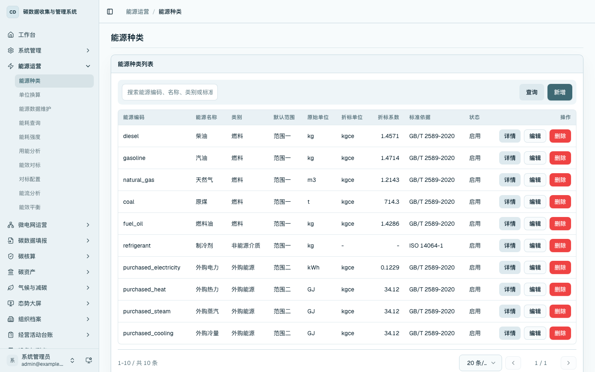
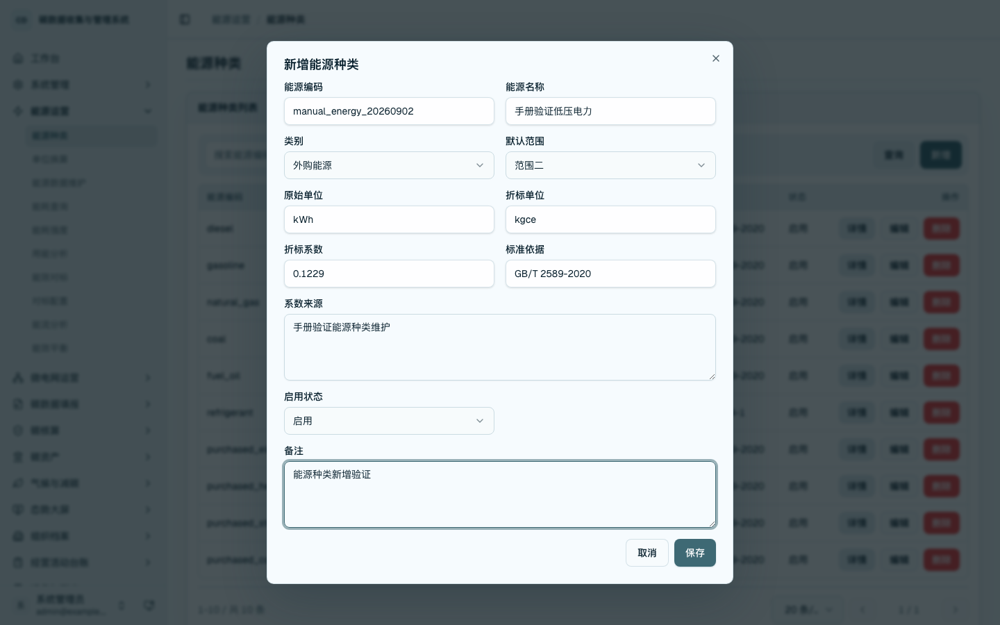
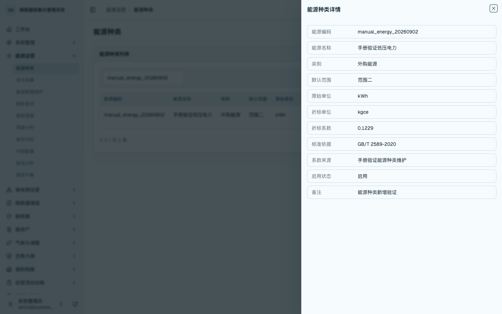
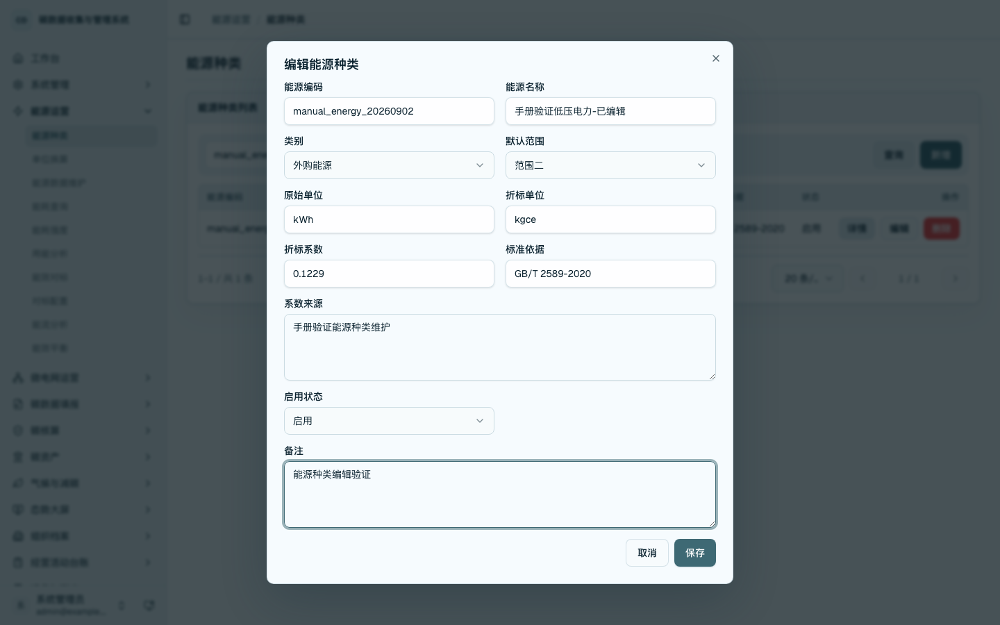
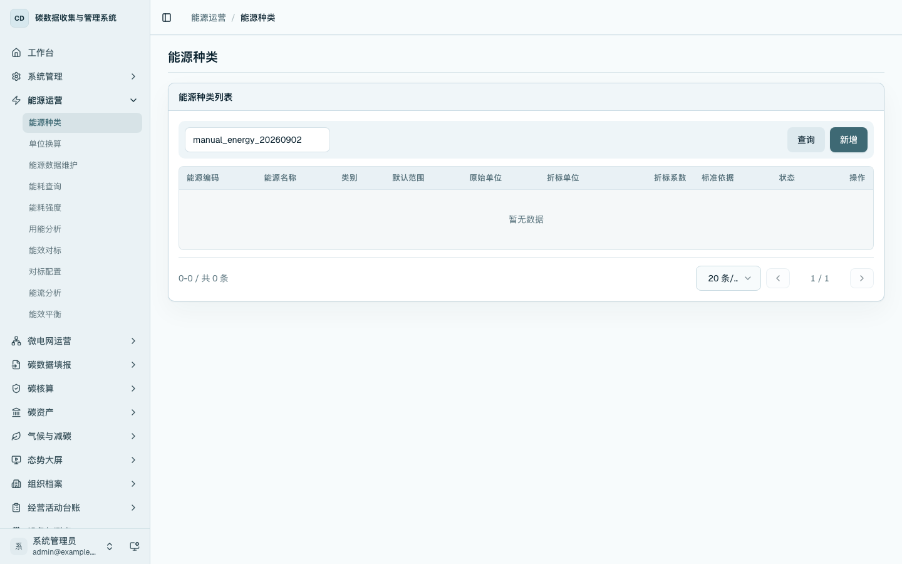
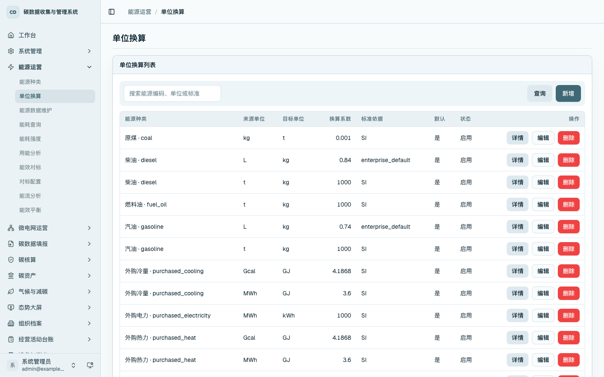
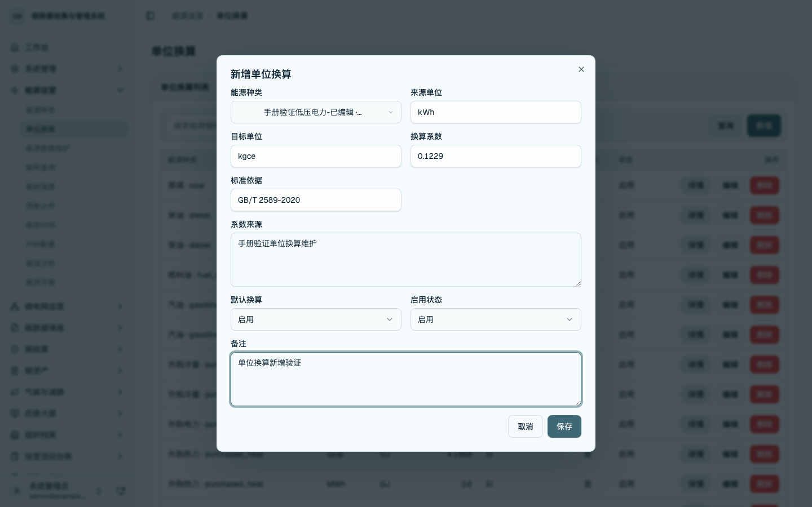
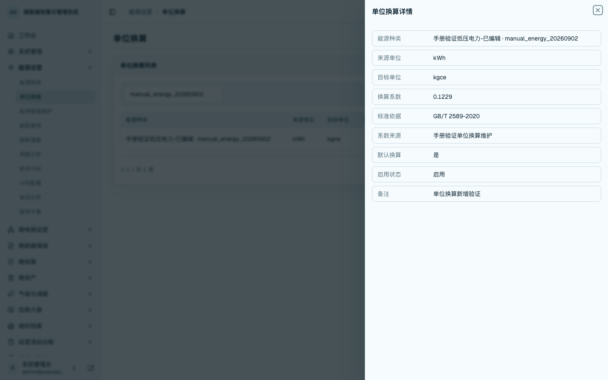
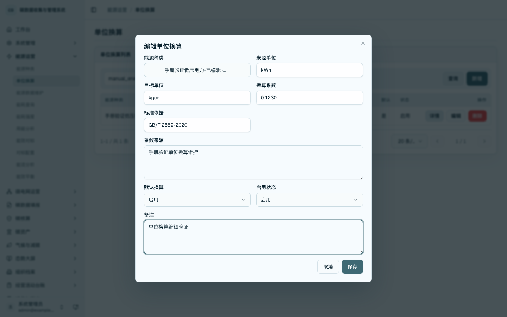
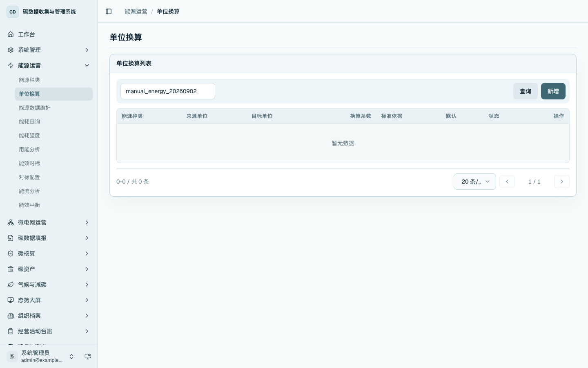

能源主数据维护
本章用于维护平台识别能源消费数据时使用的基础字典。能源主数据只处理能源种类和单位换算，不录入具体能耗数值，也不维护碳排放因子；碳排放因子在“因子维护与核算准备”章节中处理。
菜单位置
- 从左侧侧边栏进入「能源运营 / 能源种类」，打开
/data/energy-types，维护平台可识别的能源品种、单位、折标系数和启用状态。 - 从左侧侧边栏进入「能源运营 / 单位换算」，打开
/data/energy-unit-conversions，维护同一能源在原始单位、折标单位和统计单位之间的换算关系。 - 也可从
/platform的「能源运营」分组进入能源种类和单位换算页面，适合在集中维护主数据时使用。
能源主数据先于能源事实数据维护。能源种类停用或换算关系调整后，后续新增能源事实记录和分析查询会按最新启用口径选择和展示。
能源种类列表
进入 /data/energy-types，查看能源种类列表。列表展示能源编码、能源名称、类别、默认范围、原始单位、折标单位、折标系数、标准依据和启用状态。可按能源编码、名称、类别或标准依据进行查询。

新增能源种类
点击「新增」，填写能源编码、能源名称、类别、默认范围、原始单位、折标单位、折标系数、标准依据、系数来源和备注。保存后，系统将该能源种类纳入能源数据维护、单位换算维护和后续能耗统计的可选范围。

查看能源种类详情
在能源种类列表中点击「详情」，系统打开详情抽屉并展示保存后的字段。通过详情页核对编码、名称、类别、范围、单位、折标系数、标准依据和启用状态。

编辑能源种类
在能源种类列表中点击「编辑」，系统回填原有字段。可调整能源名称、类别、默认范围、单位、折标系数、标准依据、启用状态和备注。保存后重新查询能源编码，确认列表和详情内容已更新。

删除能源种类
在能源种类未被能源事实数据使用时，可点击「删除」清理该能源种类。若能源种类已经被能源数据引用，系统会阻止删除，应改为停用或先处理关联数据。

单位换算列表
进入 /data/energy-unit-conversions，查看单位换算列表。列表展示能源种类、来源单位、目标单位、换算系数、标准依据、默认换算和启用状态。该页面用于维护同一种能源在原始单位和折标单位之间的换算关系。

新增单位换算
点击「新增」，选择能源种类，填写来源单位、目标单位、换算系数、标准依据、系数来源和备注。保存后，该换算关系可用于能源数据归一化和折标统计。

查看单位换算详情
在单位换算列表中点击「详情」，核对能源种类、来源单位、目标单位、换算系数、标准依据、默认换算和启用状态。

编辑单位换算
在单位换算列表中点击「编辑」，系统回填原字段。可调整换算系数、标准依据、默认换算、启用状态和备注。保存后重新查询能源编码，确认更新结果已回显。

删除单位换算
对不再使用的单位换算记录点击「删除」。删除后按能源编码查询，列表不再显示该换算记录。
